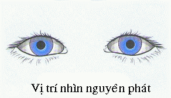

Cardinal positions of gaze
* Định nghĩa:
+ Các hướng nhìn chủ yếu.
+ Các hướng di chuyển mắt để kiểm tra sáu đôi cơ cùng hiệp đồng vận nhãn: phải, trái, lên trên và sang phải, xuống dưới và sang phải, lên trên và sang trái, xuống dưới và sang trái. Hình minh họa bên dưới có thêm hai hướng nhìn gọi là Midline Vertical (Nhìn lên trên, nhìn xuống dưới).

Hình minh họa các hướng nhìn chủ yếu từ vị trí nhìn nguyên phát (primary position)